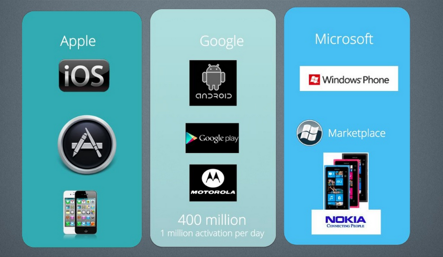

Goals & Strategies
for an Open Web
Théo Chevalier – L3 MIAGE – 2014-03-13, Toulouse
We are best known for…

Firefox for Android

What we will talk about
- What Mozilla is
- What Mozilla do
- What Mozilla wants for the future
What I do for Mozilla
- Localization: products, websites
- Code, bug reporting & QA for l10n
- Events: demo at booth, talks
- Community: Help newcomers
A community
Mozilla in numbers
- Users: half a Billion users
- Languages: 80+
- Community: 1,000’s core contributors globally (2014: ×10)
- Staff: ~1,000 employees worldwide
Two things to keep in mind
- We’re a not-for-profit organization
- What we do, we do it for the Web
UNLEASH THE FUTURE

Firefox OS
A complete mobile operating system
entirely built with Web technologies
Sneak peek – Firefox OS 1.x
 Photo by: Stephen Shankland/CNET
Photo by: Stephen Shankland/CNET
Sneak peek – Firefox OS 1.x
 Photo by: Stephen Shankland/CNET
Photo by: Stephen Shankland/CNET
Sneak peek – Firefox OS 1.x
 Photo by: Stephen Shankland/CNET
Photo by: Stephen Shankland/CNET
WAT.
Yet another mobile OS?


Today:
proprietary platforms

We don’t want
the third place
We want the Web to be
the platform on mobile
- Compatibility (write once, run everywhere)
- It’s easy to write a Web App
- Freedom for the user
- Open the mobile OS market
Minimal manifest file
{
"name": "My App",
"description": "My elevator pitch goes here",
"launch_path": "/index.html",
"icons": {
"128": "/img/icon-128.png"
},
"developer": {
"name": "Your name or organization",
"url": "http://your-homepage-here.org"
},
"default_locale": "en"
}
Easy to hack
http://paulrouget.com/e/riverscreen/Firefox OS for developers
- Interoperability \o/ (write once, run everywhere)
- You already know how to code
- No need to ask permission to anyone
- Marketplace is not the only source for Apps
- Multiple payment monetization options
Firefox OS for carriers
- Easy to customize
Firefox OS for users
- Affordable smartphone for everyone
- Access the “real Web”
- Choice
- Privacy
Firefox OS target markets
- People who don’t have a smartphone yet
- Developing markets (low competition)
The $25 smartphone

Next launches in 2014
- Asia
- Africa
“We want the Web to redo on mobile what it did on Desktop 15 years ago”
Tristan Nitot, Mozilla Principal Evangelist

Most Trusted
Internet Company
for Privacy
By the Ponemon Institute
Lightbeam
 Lightbeam highlights interactions between sites intentionally visited and third parties
Lightbeam highlights interactions between sites intentionally visited and third parties
The principles of universality of access irrespective of hardware or software platform, network infrastructure, language, culture, geographical location, or physical or mental impairment are core values
Tim Berners-Lee, father of the Web
But Mozilla is also…
things